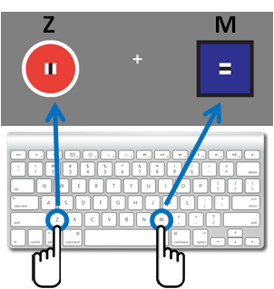

Please read these instructions carefully before you begin the experiment.
We are interested in how people make decisions under limited information and time. In this experiment, you will be asked to compare two stimuli and select the one that is more likely to win in a given trial.
|  | You will indicate your decision by pressing a button: z = left stimulus (left index finger) m = right stimulus (right index finger) Please respond as fast as possible while trying to avoid making mistakes. |
On each trial, you will be presented with two stimuli that have different features, e.g. color (blue/red), shape (circle/square), contour (black/white) and line orientation (horizontal/vertical), which we refer to as cues (see images shown below).
These cues are assigned with fixed winning probabilities, which can be used to predict a stimulus with a higher chance of winning. Thus, your goals are (1) to learn about the properties of each cue by trial-and-error and (2) to win as many trials as possible. To expedite the learning process, it is critical that you make a valid response and get feedback on each trial even if you are not sure about the right answer. Every time you win a trial, you will receive 1 point and a running tally of your score will be shown on the screen throughout the experiment.
Consider the following case:
After trying out 50 trials, let's assume that you have a pretty good idea about these cues. If you've learned that blue has a better chance of winning than red, and circle has a better chance of winning than square, then you will be more likely to win this trial by selecting the left stimulus. However, let's assume that you've also learned that white contour is better than black contour. In this case, you will need to rank these cues from most important to least important, which will help you to determine whether to change your decision or not. (These examples, of course, are not necessarily true. Probabilities are assigned randomly at the beginning of the experiment for each participant.)
Please note that feedback is probabilistic, which means that you won't always get the same feedback even if you make the same decisions across trials. For example, if a stimulus' overall winning percentage is 70%, it means that this stimulus will win 7 times out of 10 trials. Please keep in mind that since your goal is to maximize the number of wins, regardless of feedback, it is always beneficial to choose a stimulus with a higher chance of winning.
The experiment is divided into 2 phases:
Overall, please respond as quickly and as accurately as possible once you've reached a decision. You may take a short break between blocks. However, please do not do anything else while doing this task. It is very important to stay focused during the experiment.
Your HIT will be approved if you satisfy following criteria, which are reasonable thresholds based on our previous studies.